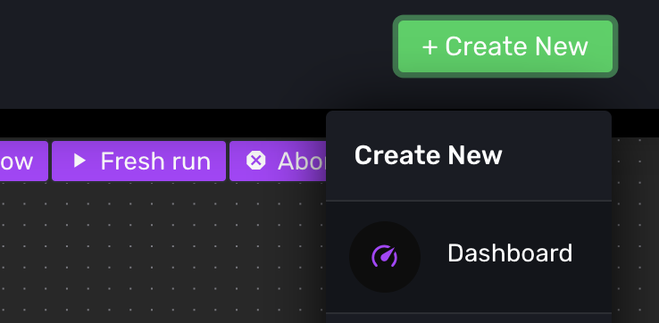
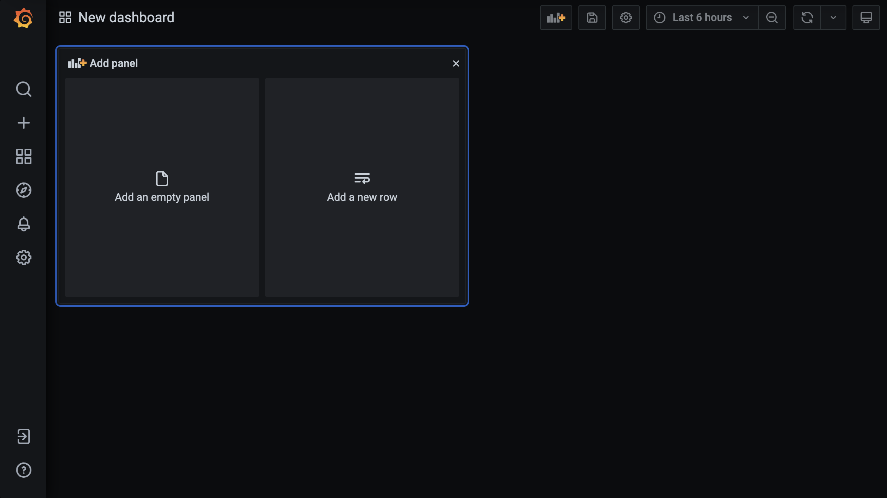

Dashboards
Silimate Platform's dashboarding system is based on Grafana with Plotly plugins. It also has support for Cadence Stylus metrics when a Cadence-based flow with Common UI is enabled. For more information on how to build dashboards with these, check out the links below or contact support.
- Grafana
- Plotly
- Natel Plotly Panel Plugin for Grafana
- AE3E Plotly Panel Plugin for Grafana
- Cadence Stylus UI
Architecture
The basic idea is that logs/metrics go into a PostgreSQL warehouse, which Grafana queries and can make dashboards/plots from. The log/metric collection happens in explicit steps that call the Log/Metrics API.
Creating a Dashboard
To create a dashboard, click the "+ Create New" button in the top navigation bar and click "Dashboard" from the dropdown menu.

The new dashboard page:

Default Dashboard Descriptions
Error/Warning Tracker
Track errors and warnings and group them by type.
Run Metrics Snapshot
Show power, performance, area (PPA) metrics collected for a given flow run.
Run Metrics Trend
Show power, performance, area (PPA) metrics collected across multiple flow runs.
Stylus Dashboard
Show power, performance, area (PPA) metrics in Cadence's integrated metric viewer.